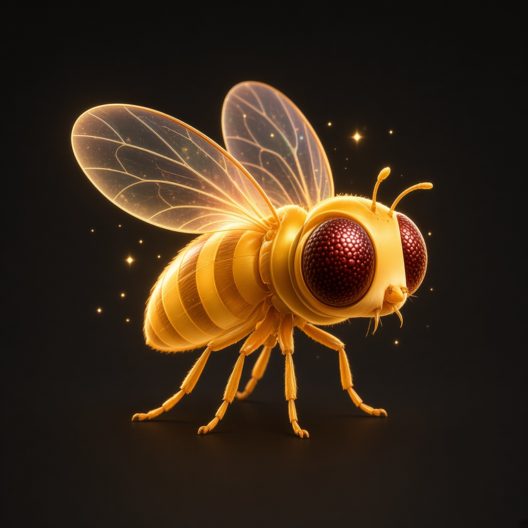
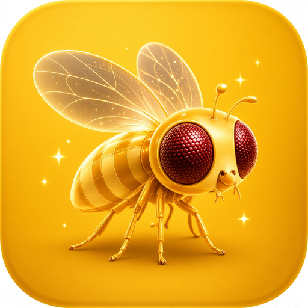
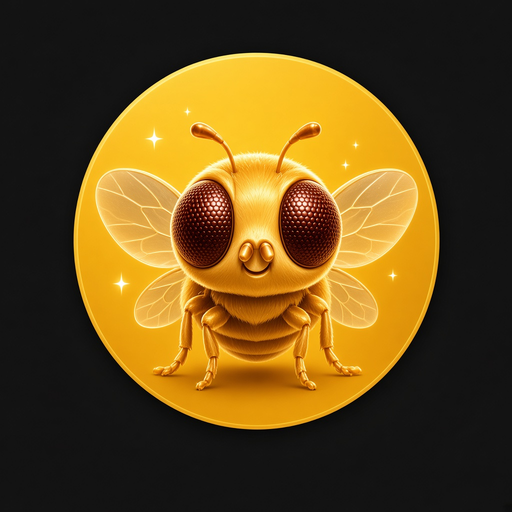

<!doctype html>
<meta charset="utf-8" />
<title>IMMORTAL mark</title>
<style>
  html,
  body {
    margin: 0;
    background: #0a0907;
    color: #f0ead9;
    font: 13px/1.5 "IBM Plex Mono", monospace;
  }
  main {
    display: grid;
    grid-template-columns: repeat(auto-fit, minmax(220px, 1fr));
    gap: 32px;
    max-width: 1200px;
    margin: 48px auto;
    padding: 0 24px 64px;
  }
  figure {
    margin: 0;
  }
  img,
  object {
    display: block;
    width: 100%;
    aspect-ratio: 1;
    background: #12100d;
  }
  figcaption {
    margin-top: 12px;
    letter-spacing: 0.12em;
    color: #f3ba00;
    font-size: 11px;
  }
  small {
    display: block;
    color: #8a8172;
    letter-spacing: 0;
    margin-top: 4px;
    font-size: 11px;
  }
</style>
<main>
  <figure>
    
    <figcaption>BRAND / FAVICON<small>Golden mascot. Same still as the site, OG, and IFS avatar.</small></figcaption>
  </figure>
  <figure>
    
    <figcaption>APP ICON<small>Gold field. Apple touch and launch badge.</small></figcaption>
  </figure>
  <figure>
    
    <figcaption>CIRCLE<small>Round badge for compact marks.</small></figcaption>
  </figure>
  <figure>
    <object data="./ifs.svg" type="image/svg+xml" aria-label="IFS vector"></object>
    <figcaption>IFS / VECTOR<small>Charcoal fly on gold. Launch favicon.</small></figcaption>
  </figure>
  <figure>
    <object data="./site.svg" type="image/svg+xml" aria-label="Site vector"></object>
    <figcaption>SITE / VECTOR<small>Measured circle around the gold fly.</small></figcaption>
  </figure>
  <figure>
    <object data="./seal.svg" type="image/svg+xml" aria-label="Seal vector"></object>
    <figcaption>SEAL / VECTOR<small>Circle and square. Gold is the skin now.</small></figcaption>
  </figure>
</main>
